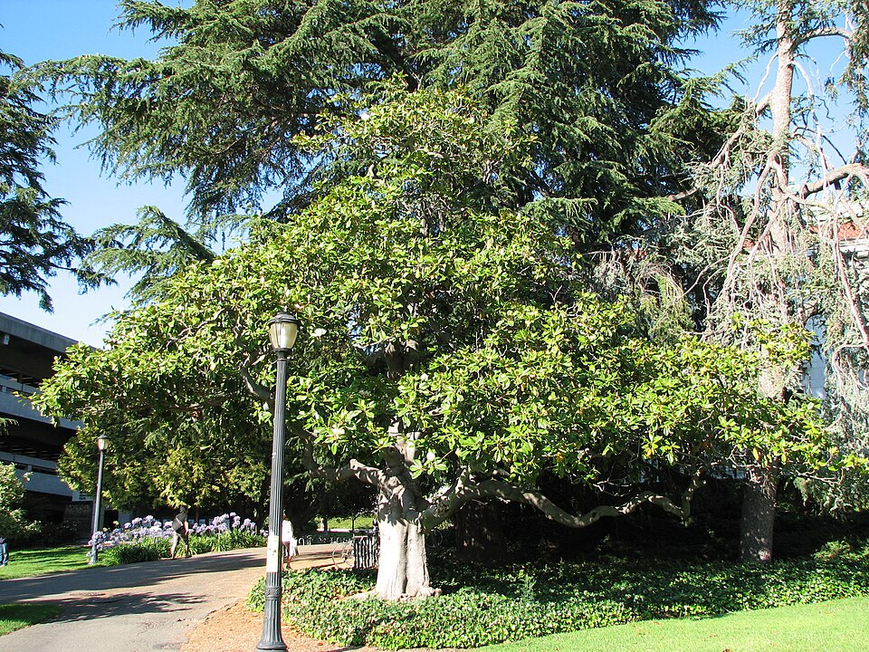

Magnolia — Magnolia (Magnolia)
An ancient aristocrat who predates the bees — she lures pollinators with brute scent and lets beetles do the dirty work, serene and unhurried in everything she does.
Combat flavor
Magnolia's medium-hard wood and living-fossil status make her a deliberate, enduring fighter — slow to anger but impossible to rush. Her beetle-pollination quirk could translate to a special ability that works even when normal synergy chains are disrupted.
Real-world facts
Typical / max height10–25 m typical; up to 37 m (M. grandiflora)
Lifespan80–120 years typical; genus is a living fossil — Magnolia ancestors predate bees by ~20 million years
Wood~617 kg/m³ air-dry density; Janka ~1020 lbf — medium-hard, heavier than it looks
Growth speedmedium (some species fast: 30–60 cm/yr; others slow)
Ecology / notable traitsLiving-fossil lineage (Cretaceous origin); flowers pollinated by beetles, not bees; large colorful seeds attract birds; wide ornamental cultivation globally; no thorns, no significant toxicity; some species have allelopathic leaf litter suppressing competitors
Gallery
